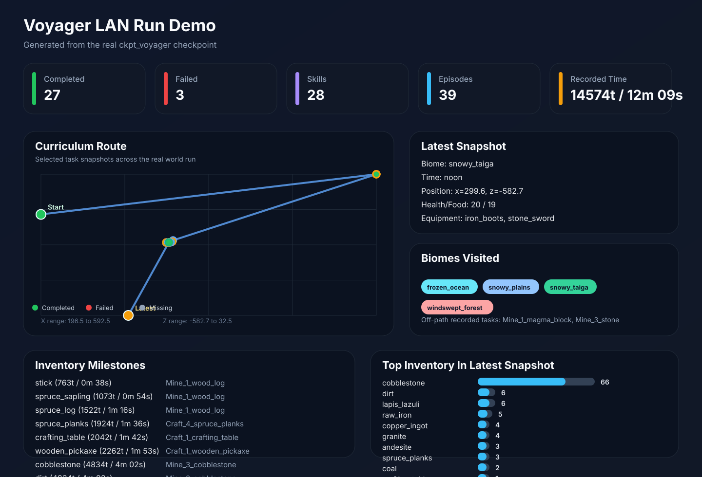
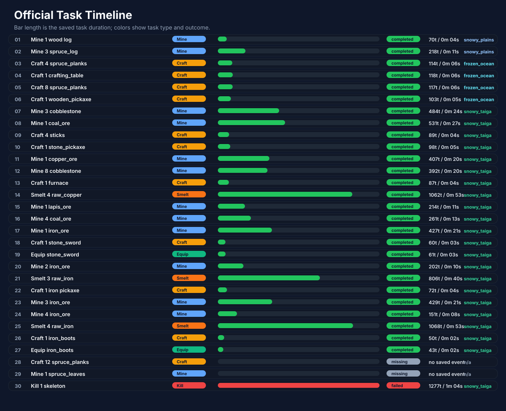

Voyager Checkpoint Explorer
This explorer is generated from the real ckpt_voyager checkpoint. The original run did not come with Replay Mod recordings or exported videos, so the repo now ships a GitHub-friendly visualization site, static charts, and recording utilities.
Completed Tasks
27
Failed Tasks
3
Skills
28
Recorded Episodes
39
Recorded Time
14574t / 12m 09s


Interactive Explorer
Filter the checkpoint by task status, task type, biome, or free-text search. Click any route node or task card to inspect the final snapshot, inventory, and chat transcript for that step.
Biomes visited: frozen_ocean, snowy_plains, snowy_taiga, windswept_forest
Off-path recorded tasks: Mine_1_magma_block, Mine_3_stone
Route Map
Each circle is a saved task snapshot projected on the X/Z plane.
Completed
Failed
Mine
Craft
Smelt
Equip
Other
Filtered Tasks
Item Milestones
| Item | Episode | Reached At |
|---|---|---|
| stick | Mine_1_wood_log | 763t / 0m 38s |
| spruce_sapling | Mine_1_wood_log | 1073t / 0m 54s |
| spruce_log | Mine_1_wood_log | 1522t / 1m 16s |
| spruce_planks | Craft_4_spruce_planks | 1924t / 1m 36s |
| crafting_table | Craft_1_crafting_table | 2042t / 1m 42s |
| wooden_pickaxe | Craft_1_wooden_pickaxe | 2262t / 1m 53s |
| cobblestone | Mine_3_cobblestone | 4834t / 4m 02s |
| dirt | Mine_3_cobblestone | 4834t / 4m 02s |
| coal | Mine_1_coal_ore | 5365t / 4m 28s |
| stone_pickaxe | Craft_1_stone_pickaxe | 5552t / 4m 38s |
| raw_copper | Mine_1_copper_ore | 5959t / 4m 58s |
| furnace | Craft_1_furnace | 6438t / 5m 22s |
| copper_ingot | Smelt_4_raw_copper | 7500t / 6m 15s |
| lapis_lazuli | Mine_1_lapis_ore | 7946t / 6m 37s |
| raw_iron | Mine_1_iron_ore | 8634t / 7m 12s |
| stone_sword | Craft_1_stone_sword | 8694t / 7m 15s |
| iron_ingot | Smelt_3_raw_iron | 9763t / 8m 08s |
| iron_pickaxe | Craft_1_iron_pickaxe | 9835t / 8m 12s |
| iron_boots | Craft_1_iron_boots | 11533t / 9m 37s |
| andesite | Mine_3_iron_ore | 12282t / 10m 14s |
Latest Inventory Snapshot
| Item | Count |
|---|---|
| cobblestone | 66 |
| dirt | 6 |
| lapis_lazuli | 6 |
| raw_iron | 5 |
| copper_ingot | 4 |
| granite | 4 |
| andesite | 3 |
| spruce_planks | 3 |
| coal | 2 |
| crafting_table | 1 |
| diorite | 1 |
| furnace | 1 |
| iron_pickaxe | 1 |
| spruce_sapling | 1 |
| stone_pickaxe | 1 |
| stone_sword | 1 |
| wooden_pickaxe | 1 |